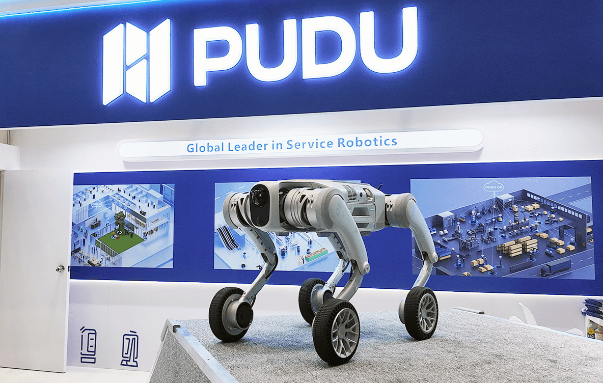

Pudu Robotics lance la série Pudu D5, robots quadrupèdes autonomes pour environnements extérieurs
De O. Héniel · Publié le 11 décembre 2025

Pudu Robotics, développeur de robots de service, vient d’annoncer la commercialisation de la série Pudu D5, une nouvelle génération de robots quadrupèdes autonomes conçus pour des environnements extérieurs complexes et de grande échelle.
Jeune entreprise chinoise fondée en 2016, elle est spécialisée dans la conception, la R&D, la fabrication et la vente de robots de service, principalement des robots de livraison, de nettoyage et des robots destinés au milieu industriel. L’entreprise affirme avoir déjà expédié plus de 100 000 unités dans le monde.
Bien que les robots de service soient largement adoptés dans les restaurants, hôtels et autres environnements commerciaux structurés, de nombreux espaces extérieurs et industriels restent difficiles à automatiser. En lançant ce projet, l’objectif était de proposer une solution au manque de robots capables de naviguer sur des terrains complexes. Les solutions actuelles pour l’inspection, la patrouille, le soutien logistique ou l’intervention d’urgence en terrains irréguliers ou sous conditions météorologiques extrêmes restent encore limitées. La série D5 a été développée pour répondre à cette demande en apportant une mobilité tout-terrain et une véritable adaptabilité à tout type d’environnement, là où les systèmes traditionnels montrent leurs limites.
Le Pudu D5 est développé sous deux versions : une version D5 à pattes conçue pour les terrains difficiles, et une version D5-W sur roues optimisée pour les surfaces mixtes.
Felix Zhang, fondateur et PDG de Pudu Robotics, déclare :
« La série Pudu D5 représente une avancée majeure dans notre vision de la robotique. Le D5 parvient à intégrer une autonomie avancée, une mobilité robuste et une interaction intelligente dans des scénarios complexes en extérieur et en milieu industriel. Pour Pudu, le D5 n’est pas simplement un nouveau produit, mais un jalon dans notre mission visant à déployer les robots dans davantage d’applications. Nous construisons un écosystème collaboratif de robots spécialisés, semi-humanoïdes et humanoïdes qui, en se complétant, peuvent répondre globalement aux besoins variés de nos utilisateurs. »
Des spécifications impressionnantes
Le Pudu D5 offre une perception environnementale complète grâce à quatre caméras fisheye à 120° et deux capteurs LiDAR de 192 lignes, capables de générer des nuages de points 3D denses pour une localisation et une navigation précises, appuyées par des outils de visualisation à distance pour le suivi des missions. Il peut cartographier et se déplacer dans des espaces allant jusqu’à un million de mètres carrés et exécuter des workflows entièrement autonomes, avec une autonomie de 14 km par charge, ce qui le rend adapté aux environnements étendus comme les aéroports ou les campus industriels.
Sa structure en aluminium haute résistance et son contrôle de couple en boucle fermée lui permettent de transporter une charge utile stable de 30 kg pendant plus de deux heures d’opération à pleine charge. Grâce à sa locomotion hybride roues-pattes, il atteint 5 m/s sur terrain plat, gravit des pentes de 30° et franchit des marches de 25 cm, tandis que l’IMU et les algorithmes de contrôle bionique assurent une stabilité optimale en conditions difficiles. Conçu pour fonctionner dans des conditions réelles exigeantes, il démarre à froid à –10 °C, opère de –20 °C à 55 °C et bénéficie d’une protection IP67, garantissant sa résistance à la pluie, à la neige et à la poussière.
Il excelle également en suivi intelligent grâce à la fusion vision/profondeur et à des algorithmes prédictifs permettant de maintenir une distance sûre même dans des environnements étroits ou encombrés. Enfin, il propose une interaction naturelle avec plus de dix gestes intuitifs et un système de commande vocale doté d’une réduction de bruit IA, facilitant une utilisation fluide sur site.
Pudu ne se contente plus de robots « simples » de service, mais élargit son écosystème déjà bien fourni de robots spécialisés, semi-humanoïdes et humanoïdes pour répondre à des besoins plus complexes et s’adapter à tout type de scénario. Le Pudu D5 serait ainsi compatible avec des tâches telles que l’inspection industrielle, les infrastructures de transport, la sécurité extérieure ou encore la recherche en environnement extrême. Il répondrait donc à des défis opérationnels réels jusqu’ici hors de portée de la plupart des systèmes autonomes.